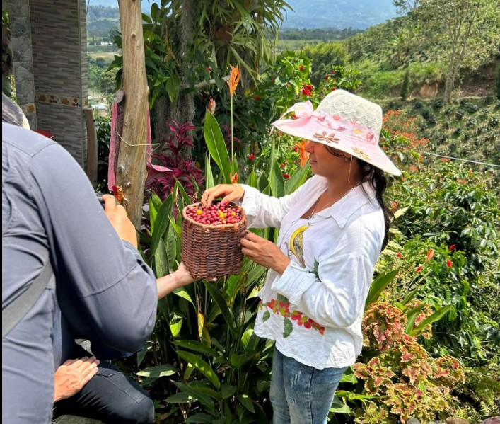
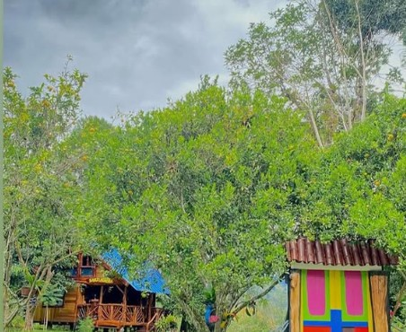

La Ruta del Café en Pitalito permite a los visitantes conocer de cerca el proceso de producción del café huilense, reconocido por su calidad y sabor. Durante el recorrido se visitan fincas cafeteras, se aprende sobre la siembra, cosecha y tostión del café, y se viven experiencias sensoriales a través de la degustación. Esta actividad combina naturaleza, tradición y aprendizaje, ofreciendo una experiencia auténtica en contacto con la cultura cafetera de la región.

La Finca Cafetera el Matrimonio, ubicada en Pitalito, Huila (vía Guacacallo), es un reconocido destino agroturístico y mirador. Ofrece experiencias cafeteras, recorridos guiados por la propietaria Flor Castro, comida típica de la región, alojamiento rural y vistas panorámicas, enfocado en conectar a los visitantes con las raíces del campo.
Ver más
ubicada en el corregimiento de Bruselas en Pitalito, es un espacio donde la tradición cafetera y la naturaleza se unen para ofrecer una experiencia única. Este lugar permite a los visitantes conocer de cerca el proceso del café, desde su cultivo hasta su preparación, mientras disfrutan de paisajes rodeados de montañas y vegetación característica de la región.
Ver más